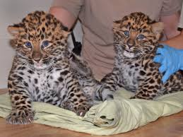
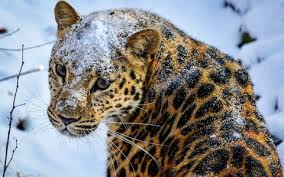
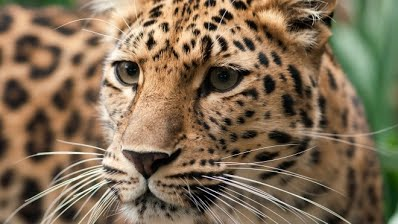
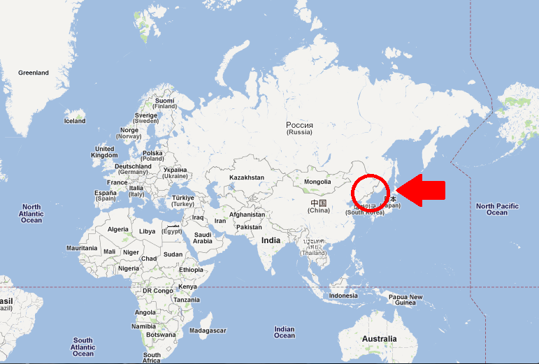
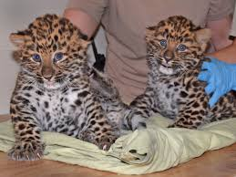
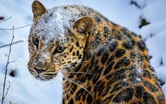
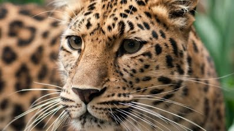
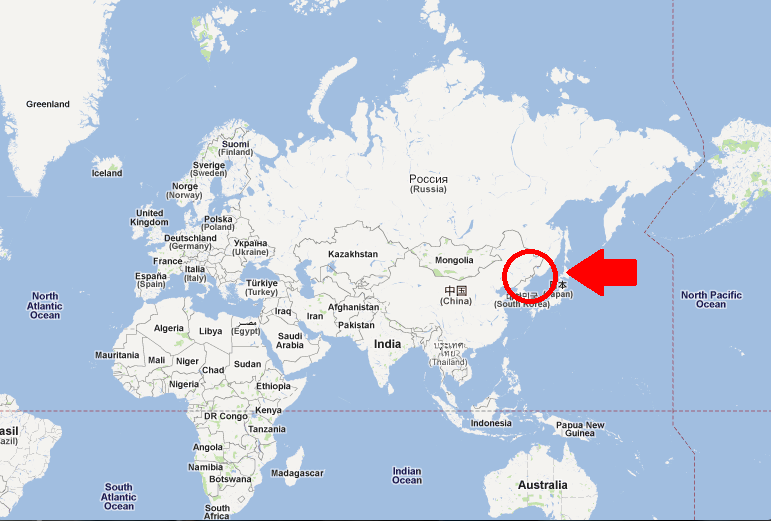

What is the Amur Leopard?
People usually think of leopards in the savannas of Africa but in the Russian Far East, a rare subspecies has adapted to life in the temperate forests that make up the northern-most part of the species’ range. Similar to other leopards, the Amur leopard can run at speeds of up to 37 miles per hour. This incredible animal has been reported to leap more than 19 feet horizontally and up to 10 feet vertically.
The Amur leopard is solitary. Nimble-footed and strong, it carries and hides unfinished kills so that they are not taken by other predators. It has been reported that some males stay with females after mating, and may even help with rearing the young. Several males sometimes follow and fight over a female. They live for 10-15 years, and in captivity up to 20 years. The Amur leopard is also known as the Far East leopard, the Manchurian leopard or the Korean leopard.
Why They Matter
The Amur leopard is important ecologically, economically and culturally. Conservation of its habitat benefits other species, including Amur tigers and prey species like deer. With the right conservation efforts, we can bring them back and ensure long-term conservation of the region.
 







Why are they endangered?
The Amur leopard is poached largely for its beautiful, spotted fur. In 1999, an undercover investigation team recovered a female and a male Amur leopard skin, which were being sold for $500 and $1,000 respectively in the village of Barabash, not far from the Kedrovaya Pad reserve in Russia. Agriculture and villages surround the forests where the leopards live. As a result the forests are relatively accessible, making poaching a problem—not only for the leopards themselves, but also for important prey species, such as roe deer, sika deer and hare, which are hunted by the villagers both for food and cash.